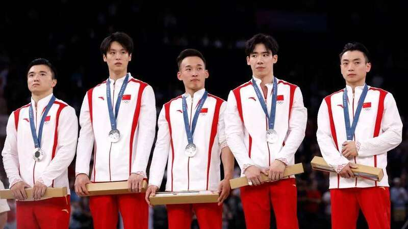
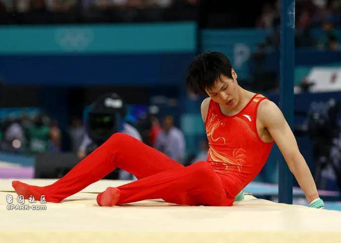
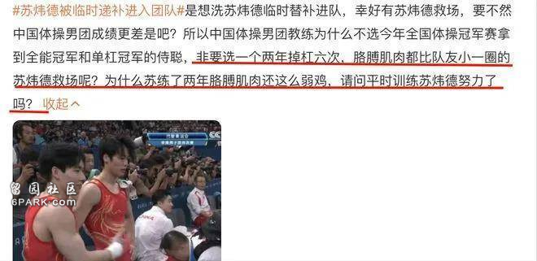
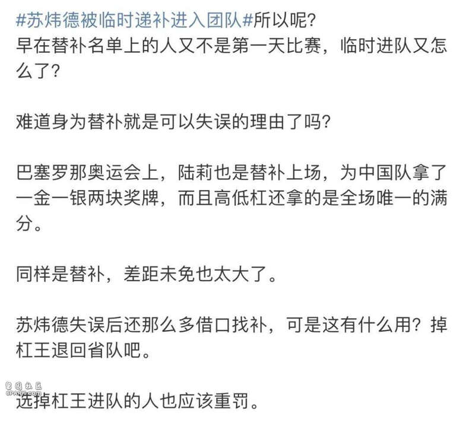
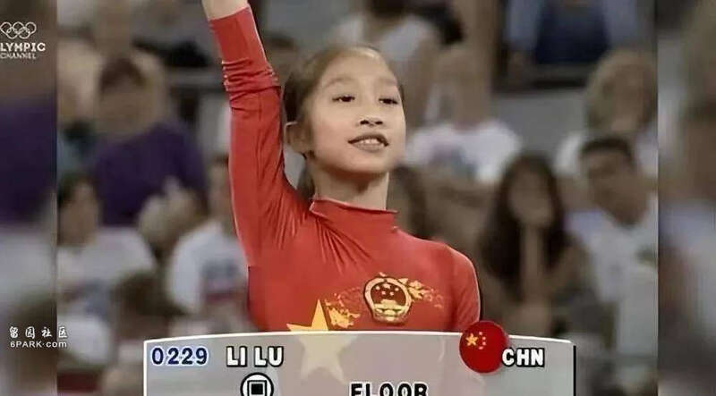
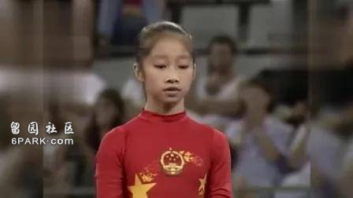
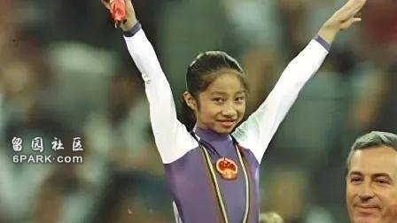
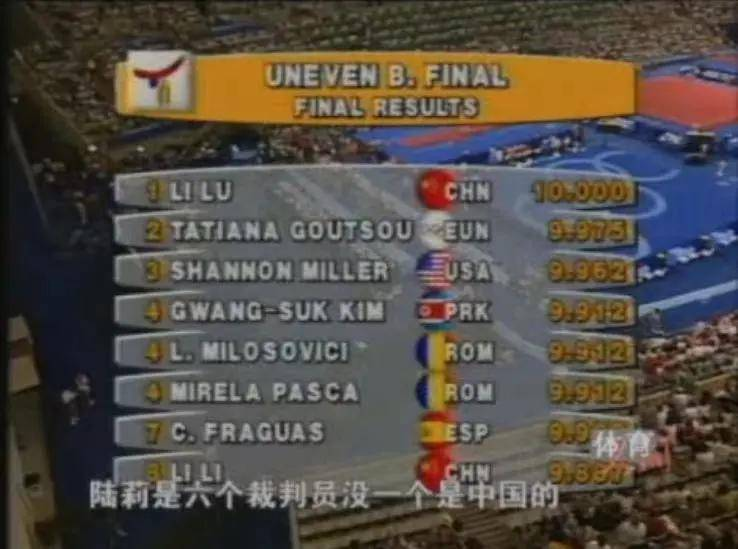
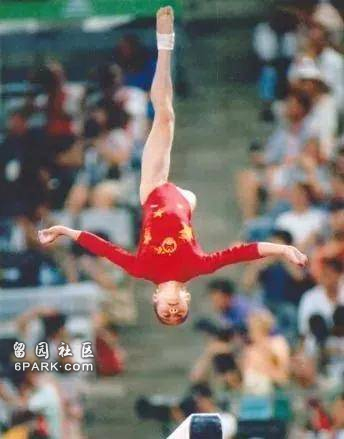
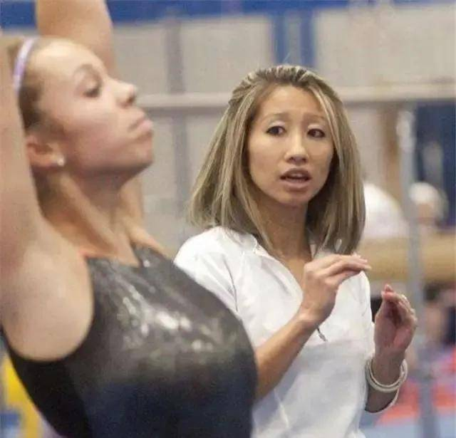

八月要依旧活力满满哦！最近巴黎奥运会正在如火如荼的进行当中，不知道大家有没有关注各个赛事呢？
在30日进行的体操团体决赛中，原本比分领先的中国队，在最后一项单杠项目出现了掉杠两次的严重失误，最终被日本队反超获得银牌，实在是太可惜了！

大优势领先被翻盘，这在奥运会体操历史上也实属罕见。
但竞技体育就是这样充满了不确定性，掉杠的运动员苏炜德也在赛后采访中表示：对不起我们队友大哥们。

对于这个结果，要说不可惜是绝对不可能的。
网友们也随之了解了苏炜德的往期战绩，发现这已经不是他第一次失误了。早在2023年6月份的亚锦赛上，苏炜德就出现了两次掉杠的严重失误。
这也许正是竞技体育的魅力所在，不到最后一刻没人知道结果会是怎样。不是说百分之百不允许运动员失误，但在奥运会决赛这么重要的比赛节点派出一个总是失误的选手最后上场，教练组的安排确实值得思考，不少网友认为教练组的安排有些且妥当了……
且苏炜德也是临时替补进入团队，原本的上场队员孙炜受伤后，才临时更换为他代表参赛。但“替补队员”这个说法显然不能说服愤怒的网友们。

网友们纷纷表示：难道身为替补就是可以失误的理由了吗？陆莉当年也是替补上场，但高低杠拿到了全场唯一的满分。

说起陆莉，那真的可以称得上“最强替补”这个称号了。
1992年，年仅16岁的她在巴塞罗那奥运会体操决赛的赛场上仅用30秒的时间就惊艳了所有外国裁判和现场观众，成为了体操历史上首个满分夺冠的奥运冠军。

当时在比赛前，我国高低杠实力选手石丽颖在热身中不慎受伤，陆莉这才临危授命，代替其上场。
不过当时的陆莉在国际赛场上还没有什么突出的成绩，大家所了解到的，仅仅是她1992年参加的巴黎世界体操单项锦标赛。
因此当时的教练组和媒体，也没对她抱有过高的期望。

谁知距离巴黎世界锦标赛仅仅过去了8个月，几乎完美的“陆莉连接”夺去了所有人的目光。
怪不得大家都说她在杠上一套行云流水的翻腾动作，就像是一只飞舞的小燕子。

值得一提的是，在陆莉夺冠之前，中国体操队除了男子团体得了亚军外其他项目都没能进入决赛。
可以说陆莉这次的冠军，打破了中国队出师不利的局面，鼓起了中国体操队的士气。她也被誉为是中国体操队的第一名秘密武器。

不过身为秘密武器的陆莉，体操生涯也有几段小插曲。
谁能想到陆莉这块好苗子最开始也差一点就被埋没了呢？
小时候的陆莉由于家与体操房距离比较远，长期往返接送成了陆莉父母的一大难题。最后实在没办法，只好叫陆莉先暂停训练。
后来教练周晓林得知此事后，让陆莉与他的女儿住在一起，这样一来既解决了接送问题，也可以安心训练。而陆莉也争气的没让大家失望，成为湖南省体操学校提高班的首批学生。

但随之而来的第二个小插曲也到来了，在湖南省体操队的时候，陆莉被检查出来患有肝炎，而这个病正是运动队是非常忌讳的。
前湖南省体操中心主任燕呢喃在采访中也表示舍不得陆莉这样好的条件，所以当时这个事情她跟谁都不敢讲，给陆莉用了很多药可是治疗的效果也是微乎其微。
后来陆莉的指导教练熊景斌也是几乎每天都是帮她熬药。也因为这个病她没有被列入集训名单，可以说那时候的陆莉处境还是很尴尬的。
伴随着肝病的困扰，陆莉最终还是选择了在自己18岁的时候退役进入北京体育大学学习，由于成绩优异，第二年成功进入北京大学国际关系学院进行深入学习。
毕业后的陆莉只身来到了美国，从一开始在明星俱乐部当教练，再到自己开了一家“全能冠军俱乐部”，她教过的学生也在加州好几个大型俱乐部比赛获得了冠军。
冠军在这一秒得到了具象化的传承。
2002年，陆莉的母亲病重去世，陆莉也从美国飞回来见了妈妈最后一面。妈妈去世后不久，爸爸陆光荣也退休了。
得知女儿在美国一个人既要管理经营着俱乐部又要照顾自己很辛苦，陆光荣也准备去美国帮助女儿搞搞后勤以减轻她的负担，没过多久父女俩终于在美国团聚了。

从被无人看好到满分世界冠军，再到体操俱乐部老板，陆莉的人生总是充满着挑战。
而她的成功也同时说明了一个道理：机会，永远是留给有准备的人。